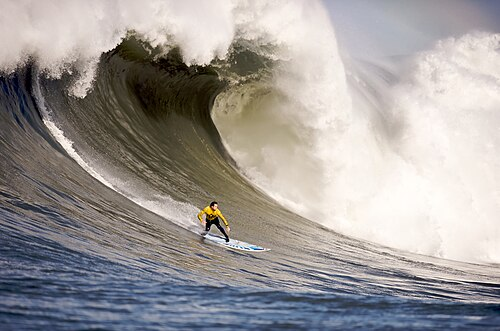

Pictures
What kind of photos are good to encode using JPEG?
JPEG, also known as Joint Photographic Experts Group, is very useful for having small images that are easily compressed into small files. That way, JPEG is way easier for sending quick messages through the internet and social apps.
What kind of photos are good to encode using GIF?
GIF, also known as Graphics Interchange Format, can be used for low-resolution cideos that are easier to share with others on the Internet, or social apps due to the fact that they are compressed in small files. This is because the videos are short, and have less pixels.
What is unique about the PNG format?
It is also known as the Portable Network Graphics, and is compressed through lossless information, as well as making the image easier to edit, and save repeatedly without ruining the image. What is unique about the PNG is that it is a post-transparent background.
How do you resize your photo to the size it should be displayed?
In order to resize your images, you must download the image you select first, then go the Tools Tab on the top of your screen, your toolbar. Finally, you will click Adjust Size, and size your image to the proportions you want. It is good to keep it proportional to prevent images from warping, or looking weird.
Why should you resize photos using photo editing software instead of resizing it using CSS?
Resizing through CSS will download the picture onto the computer, which will take a lot of Megabytes, since the program would have to deal with resizing, and adding on pixels manually. Resizing through a photo editing software will help reduce the amount of megabytes used to do so.
General Conference Talk: Favorite Quote:
They are written in the Lamb's Book of Life!

Maverick looking for fish in the sea!
Link Source: https://en.wikipedia.org/wiki/Surfing
Link Source: Wikipedia-favicon.png - Wikimedia Commons